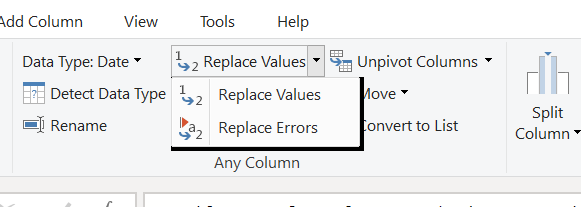
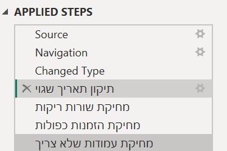
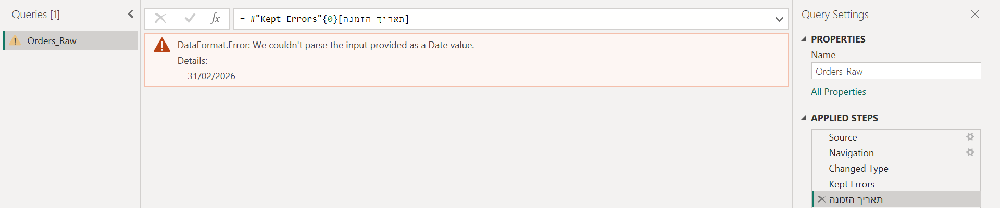
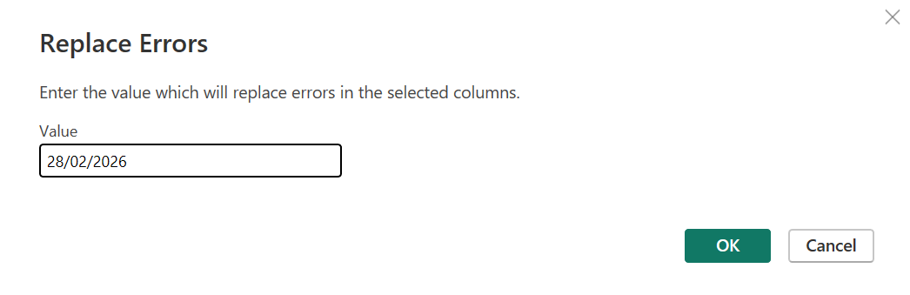
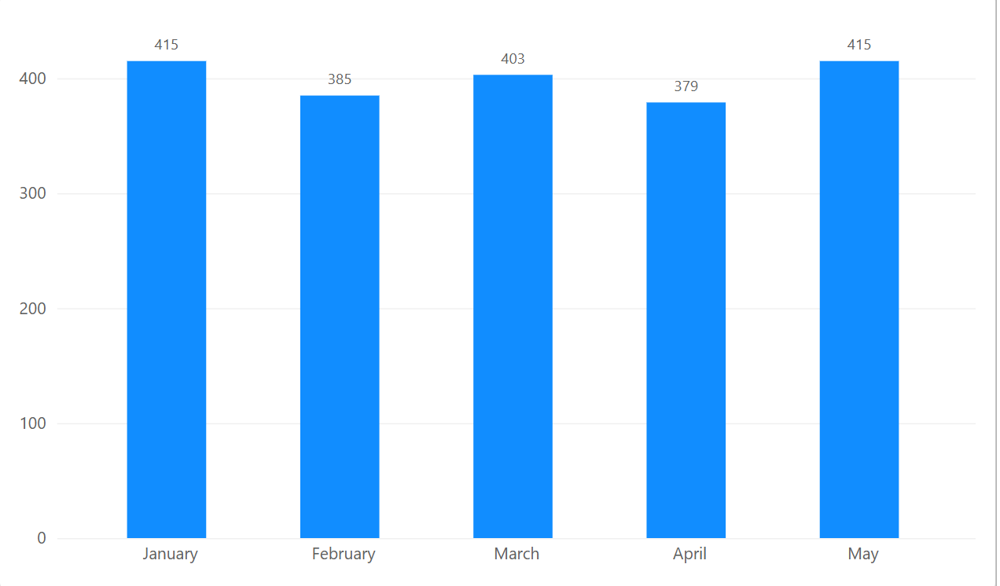

בשבוע שעבר ראינו את כל הבעיות בתדלוק, ותיקנו רק את הגסות: עמודות, שורות ריקות וכפילויות. היום הבעיה יושבת בתוך שורה טובה: תאריך שגוי, מחיר חסר.
מחליטות אם למחוק או להציל, ומתחילות לתעד כל תיקון. ובחדרים עושות את כל הדרך לבד, על נתוני ההזמנות: מתחברות, בודקות, מתקנות, ורואות בדוח מה השתנה.
שאלה
←
איסוף נתונים
←
טיוב והכנה
←
ניתוח
←
הצגה
←
החלטה
לא היית במיט?
עברי על שלבים 0–1 ועל טבלת התיעוד עם ההקלטה, ואחר כך עשי את כרטיס החדר לבד. החדרים עצמם לא מוקלטים, ולכן הכרטיס כתוב כך שאפשר לעבוד איתו לבד.
יודעות לומר, לכל בעיה, אם מוחקות שורה, מצילות תא או מורידות עמודה.
כל בעיה בנתונים יושבת באחד משלושה מקומות. המקום קובע מה עושים איתה.
שורה שכולה בעיה ← מוחקות שורהשורה ריקה לגמרי, או הזמנה שנרשמה פעמיים. אין בה שום מידע חדש. את זה עשינו בשבוע שעבר.
תא אחד בשורה טובה ← מצילותתאריך שגוי, מחיר חסר. כל שאר השורה אמיתי, ואם מוחקות אותה מאבדות תדלוק או הזמנה שקרו באמת.
עמודה בלי מידע ← מורידות עמודהעמודה ריקה כולה, או עם ערך אחד בכל השורות. היא לא עונה על אף שאלה. גם את זה עשינו בשבוע שעבר.
Home גס, Transform עדין. בשבוע שעבר עבדנו בלשונית Home: Remove Columns, Remove Rows. שם מטפלים בשורות ובעמודות שלמות.
היום עוברות ללשונית Transform: Replace Values, Replace Errors. שם מטפלים בערך אחד, בתוך תא.
להציל, אבל במה? ערך שמחליפות בו צריך סיבה. ״בינואר כל תדלוק של בנזין 95 עלה 7.40״ היא סיבה. ״נראה לי״ היא לא.
ולפעמים התשובה הנכונה היא כן למחוק. אין תשובה אחת נכונה. יש תשובה מנומקת ורשומה.
מה שלא כתוב, לא קרה. מהיום כל תיקון נרשם בטבלת התיעוד: מה הבעיה, איך גיליתן, מה עשיתן ולמה.
י״ב: הטבלה הזו היא פרק הטיוב בעבודה. י״א: זה מה שבבגרות נקרא ״לסמן בצהוב ולהסביר״.
שלב 1 · עושות יחד · תדלוק רכביםמצילות, מורידות, ורושמות
ממשיכות מקובץ התדלוק של שבוע שעבר. את הבעיות כבר ראינו, ועכשיו מחליטות ומתקנות.
1.1חוזרות לפאוור קוורי
פאוור קוורי פתוח על התדלוק, עם פרופיל על כל הנתונים.
איך עושים
פותחות את Power BI\שיעור 2\תדלוק.pbix משבוע שעבר.
Home › Transform data.
למטה משמאל לוחצות על Column profiling based on top 1000 rows, ובוחרות entire data set.
זה חוזר ל־1,000 בכל פתיחה. כל פעם שנכנסות לפאוור קוורי, הדבר הראשון: entire data set.
בשבוע שעבר לא הספקנו את 1.8 (עמודות, ריקות, כפילויות)
עושות אותו עכשיו, לפני כל השאר. לוחצות על השלב האחרון ביומן, ועושות את הצעדים של 1.8 בשיעור 2:
הסרת שם המתדלק ושם התחנה, Remove Rows › Remove Blank Rows, ו־Remove Duplicates על קוד תדלוק בלבד.
למה לפני? אם מחליפות קודם את המחיר החסר ב־7.40 (1.3), גם השורה הריקה מקבלת מחיר, והיא כבר לא ״ריקה״. Remove Blank Rows לא ימחק אותה.
לא שמרתי את קובץ התדלוק
מורידות שוב את תדלוק רכבים.xlsx, טוענות עם Transform Data (לא Load),
ומדליקות את שלוש התיבות בלשונית View. מתקנות את הסוג של תאריך ל־Date ושל מחיר לליטר ל־Fixed decimal number,
ועושות את התיקונים של 1.8 בשיעור 2, כמו בסעיף שמעל.
1.2השגיאה: מצילות את התדלוק
במקום השגיאה יש תאריך תקין, ואתן יודעות לנמק למה דווקא הוא.
איך עושים
מסתכלות מעל תאריך: Error 1. בשבוע שעבר ראינו מה כתוב שם: ״1 בינואר״, במילים.
לוחצות על הכותרת תאריך.
Transform › Replace Values ▾ › Replace Errors.

כותבות 01/01/2026 ולוחצות OK.
מה אמור להופיע?
ביומן שלב חדש, Replaced Errors. מעל עמודת התאריך: Error 0%.
למה להציל ולא למחוק? כל שאר השורה הוא תדלוק אמיתי: רכב, כמות, מחיר. רק התאריך נכתב במילים, ואנחנו יודעות מה הוא אמור להיות.
Replace Errors מחליף את כל השגיאות בעמודה באותו ערך. כאן יש שגיאה אחת, ולכן זה בסדר.
אילו היו חמש שגיאות, מחמישה חודשים שונים, כולן היו הופכות ל־1 בינואר. לכן קודם מסתכלות (Keep Errors, כמו בשבוע שעבר), ורק אחר כך מחליפות.
1.3מחיר חסר: למחוק או להציל?
יודעות לנמק מה עשינו עם התדלוקים שאין להם מחיר.
איך עושים
לוחצות על הכותרת מחיר לליטר, ומסתכלות ב־Column statistics: כמה Empty?
החץ שליד מחיר לליטר ← מסמנות רק (null) ← OK. מסתכלות: איזה דלק, ובאיזה חודש?
מוחקות את שלב הסינון ביומן (ה־X שלידו). פילטר בדיקה.
לוחצות שוב על מחיר לליטר. Transform › Replace Values.
ב־Value To Find כותבות null, וב־Replace With כותבות 7.40. OK.
מה אמור להופיע?
לפני ההחלפה: Empty 6, וכל השישה בנזין 95 בינואר. אחרי: מעל מחיר לליטר Empty 0%, וביומן שלב חדש, Replaced Value.
פילטר בדיקה = למחוק. באקסל סינון רק מסתיר שורות. בפאוור קוורי הוא מוחק אותן באמת, והמחיקה נשמרת ביומן.
שכחתן את שלב הסינון? בדוח יופיעו רק שישה תדלוקים.
הדיון של השיעור. שישה תדלוקים, כולם בנזין 95, כולם בינואר. ובינואר כל תדלוק של בנזין 95 עלה 7.40 בדיוק.
אז מצילות, וכותבות למה. אילו המחירים בינואר היו קופצים מ־7 ל־8, אולי היינו מוחקות, וגם את זה כותבות.
1.4שמות בעברית לשלבים
כל שלב ביומן אומר בעברית מה הוא עשה.
איך עושים
לוחצות על שלב ביומן.
לוחצות F2 (או קליק ימני ← Rename).
כותבות מה השלב עשה, ולוחצות Enter. וכך לכל השלבים מהיום ומשבוע שעבר.
מה אמור להופיע?

כך זה נראה בנתוני ההזמנות. מי שתפתח את הקובץ בעוד חודש תבין מה נעשה, בלי לשאול.
עוברות לשלב הבא ביומן, וכותבות שורה. וכך עד השלב האחרון.
מה אמור להופיע?
חמש שורות, באותו סדר כמו ביומן. השמות בעמודה האחרונה יכולים להיות אחרים אצלכן. מה שחשוב: בדיוק כמו ביומן.
עמודה
הבעיה
איך גיליתי
מה עשיתי
למה
שם השלב
שם המתדלק, שם התחנה
אין בהן מידע
שם המתדלק: Empty 100%. שם התחנה: Distinct 1
Remove Columns
עמודה ריקה, או עם ערך אחד, לא עונה על שום שאלה. הבעיה בעמודה כולה, ולכן לא נגעתי בשורות
מחיקת עמודות בלי מידע
כל העמודות
שתי שורות ריקות כולן
קוד תדלוק: Empty 2, ובשורות האלה כל העמודות ריקות
Remove Blank Rows
אין בהן שום מידע, אז אין מה להציל
מחיקת שורות ריקות
קוד תדלוק
ארבעה קודים מופיעים פעמיים
Count 2907, Distinct 2902, Unique 2897. Keep Duplicates הראה אותם
Remove Duplicates על קוד תדלוק
קוד הוא מזהה: כל תדלוק צריך להופיע פעם אחת. עותק נוסף נספר פעמיים בכל סכום
מחיקת תדלוקים כפולים
תאריך
שגיאה בשורה אחת
אחרי המרה ל־Date: Error 1 (ב־entire data set)
Replace Errors ← 01/01/2026
היה כתוב ״1 בינואר״ במילים. כל שאר השורה תקין, ולכן החלפתי ולא מחקתי
תיקון תאריך שגוי
מחיר לליטר
שישה תדלוקים בלי מחיר
Empty 6. סינון על null: כולם בנזין 95, כולם בינואר
Replace Values: null ← 7.40
בינואר כל תדלוק של בנזין 95 עלה 7.40 בדיוק. שאר השורה תקין, ולכן הצלתי ולא מחקתי
השלמת מחיר חסר
בדיעבד, בלי לזכור. את התיקונים של שבוע שעבר לא צריך לזכור: הם כתובים ביומן, לפי הסדר. לכן נתנו להם שמות.
עמודה
מה כותבים
דוגמה מהתדלוק
עמודה
באיזו עמודה הבעיה
תאריך
הבעיה
מה לא בסדר, במילים פשוטות
שגיאה בשורה אחת
איך גיליתי
איפה ראיתן את זה, ואיזה מספר
אחרי המרה ל־Date, מעל העמודה כתוב Error 1 (ב־entire data set)
מה עשיתי
הפעולה, ומה הכנסתן
Replace Errors ← 01/01/2026
למה (ולמה לא הדרך האחרת)
הנימוק, וגם למה לא מחקתן או למה לא הצלתן
הערך היה טקסט ולא תאריך. כל שאר השורה תקין, ולכן החלפתי ולא מחקתי
שם השלב ביומן
בדיוק כמו ב־Applied Steps
תיקון תאריך שגוי
״כי זה היה שגוי״ זה לא ״למה״. ״למה״ עונה על השאלה שבשלב 0: למה מחקתן ולא הצלתן, או להפך.
ואם הצלתן, מאיפה הערך שהכנסתן.
י״א — הגשר לבגרות. בבגרות עושים את אותו הדבר באקסל: מוצאות את הבעיה, מסמנות אותה בצהוב, ומסבירות מה עשיתן.
פאוור קוורי עושה את הסימון לבד: כל שלב ביומן הוא ״סימון בצהוב״ עם שם.
י״ב: הטבלה הזו היא פרק הטיוב בעבודה. שלושת הדברים שמצאתן במסד שלכן בשבוע שעבר הם השורות הראשונות.
שלב 2 · בחדרים · בזוגות · כ־25 דקות · נתוני הזמנותכרטיס החדר: כל הדרך, מהקובץ ועד הדוח
הפעם מתחילות מאפס, בקובץ חדש. הכרטיס בנוי כמו המטלה של טל: מתחברות, בודקות, מתקנות סוגים, רואות את הדוח לפני, מנקות, ורואות אחרי.
ובדרך, כל בעיה נרשמת בטבלת התיעוד.
לא היית בשיעור 2? כל כלי בכרטיס הוסבר שם, על התדלוק. בחדר עבדי יחד עם בת הזוג, ואחרי השיעור עברי על שלב 1 בשיעור 2.
נהגת: משתפת מסך ולוחצת. בת הזוג עושה את אותו הדבר במחשב שלה ומשווה.
נווטת: מקריאה את הצעד ובודקת את ה־✔.
2.1חיבור
פאוור קוורי פתוח על נתוני ההזמנות, עם פרופיל על כל הנתונים.
איך עושים
מורידות את נתוני הזמנות.xlsx, ומעבירות אותו מ״הורדות״ לתיקייה Power BI\שיעור 3.
פותחות דוח חדש בפאוור BI. אם התדלוק פתוח: File › New.
Home › Get data › Excel workbook, בוחרות את נתוני הזמנות.xlsx ולוחצות Open.
ב־Navigator מסמנות את הטבלה Orders_Raw, ולוחצות Transform Data. לא Load.
בלשונית View מסמנות את שלוש התיבות: Column quality, Column distribution, Column profile.
למטה משמאל: entire data set.
מה אמור להופיע?
למטה משמאל: 17 COLUMNS. מעל כל עמודה שלוש שורות: Valid, Error, Empty.
2.2בדיקת איכות, ורושמות
בטבלת התיעוד שורה לכל בעיה שמצאתן: עמודה, הבעיה, איך גיליתי. עוד בלי לתקן.
איך עושים
מורידות שוב את טבלת התיעוד, ושומרות אותה בתיקייה Power BI\שיעור 3 בשם תיעוד - הזמנות.
עוברות על העמודות אחת אחת. מעל כל עמודה: יש Error? יש Empty?
לוחצות על כותרת של עמודה, ומסתכלות למטה ב־Column statistics: Count, Distinct, Unique.
כל דבר חשוד: שורה בטבלה. ממלאות רק את עמודה, הבעיה ואיך גיליתי.
מה אמור להופיע? (לפתוח רק אחרי שחיפשתן)
בכל העמודותEmpty 3. אלה שלוש שורות ריקות כולן.
קוד הזמנה:Count 2003, Distinct 1998, Unique 1994. מזהה שאמור להיות ייחודי, ויש בו כפולים.
תאריך הזמנה:Error 1.
מקור ייבוא:Distinct 1. בכל השורות כתוב ERP-Orders.
קוד סניף:Distinct 6. השוו לאזור בארץ. מה גיליתן?
Error 0% בתאריך? ההזמנה השגויה יושבת אחרי השורה ה־1,000. בלי entire data set לא רואים אותה.
רק רושמות, עוד לא מתקנות. זה שלב 2 במטלה של טל: רשימה של כל מה שמצאתן. אחר כך מתקנות לפי הרשימה, ולא לפי מה שקופץ לעין.
2.3סוגים
לכל עמודה הסוג הנכון. שני המחירים מסומנים ככסף ($).
איך עושים
עוברות על האייקון שליד שם כל עמודה, ומשוות לטבלה למטה.
לוחצות על האייקון שליד מחיר לפריט ← Fixed decimal number. נפתח חלון? Replace current.
אותו דבר ב־סך הכל מחיר.
ליד תאריך הזמנה אמור להיות לוח שנה. כתוב ABC123? לוחצות עליו ← Date.
מה אמור להופיע?
$ ליד שני המחירים, ולוח שנה ליד תאריך הזמנה. את כל השאר פאוור BI ניחש נכון.
עמודה
הסוג הנכון
למה
קוד הזמנה · קוד לקוח · קוד סניף
Text · ABC
קוד הוא שם, לא כמות.
כל עמודות השמות והקטגוריות
Text · ABC
מילים.
תאריך הזמנה
Date · לוח שנה
אין בקובץ שעות. ובלי סוג תאריך, אין גרף לפי חודש.
מספר פריטים
Whole number · 123
סופרים פריטים שלמים. אין חצי כיסא.
מחיר לפריט · סך הכל מחיר
Fixed decimal · $
כסף.
2.4הדוח ״לפני״
בדוח טבלה וגרף לפי חודש, לפני כל תיקון, והמספרים רשומים.
איך עושים
Home › Close & Apply. קופצת הודעה על שגיאה אחת? לוחצות Close.
File › Save as, לתיקייה Power BI\שיעור 3, בשם הזמנות.
קליק על שטח ריק בדף, ובחלונית Visualizations בוחרות Table.
גוררות לטבלה את סך הכל מחיר, ואחריו את קוד הזמנה. ליד קוד הזמנה לא כתוב Count? החץ שלידו ← Count.
מה אמור להופיע?
סך הכל מחיר ₪ 11,377,566.3, ו־Count of קוד הזמנה 2,000.
שאלה לבת הזוג: בפאוור קוורי היו 2,003 שורות. לאן נעלמו שלוש?
קליק על שטח ריק בדף, לא על הטבלה. בוחרות Clustered column chart.
גוררות את תאריך הזמנה אל X-axis, ואת קוד הזמנה אל Y-axis.
ב־X-axis, מתחת לתאריך הזמנה, לוחצות על ה־X שליד Year, Quarter ו־Day. נשאר רק Month.
בלשונית העיצוב (המברשת) מדליקות Data labels.
מה אמור להופיע?
שש עמודות. ראשונה משמאל (Blank) עם 1, ואחריה
January 415 · February 385 · March 403 · April 380 · May 416.
את ה־(Blank) כמעט לא רואים, ולכן הדלקנו את המספרים.
פותחות את תיעוד - הזמנות, ובגיליון לפני ואחרי רושמות בעמודה לפני את סך המכירות, את מספר ההזמנות, ואת המספר שמעל ה־(Blank).
למה ״לפני״? כדי לדעת מה הטיוב שינה, צריך מספר להשוות אליו. בלי ״לפני״, אי אפשר להראות שהתיקון עשה משהו.
הזמנה בלי חודש. כשטוענות לדוח, תא עם שגיאה נטען ריק. ההזמנה נספרת, אבל הגרף לא יודע לאיזה חודש לשייך אותה. לכן (Blank).
🔄 מתחלפות: הנהגת מפסיקה לשתף, והשנייה משתפת את המסך שלה.
2.5ניקוי
בלי שגיאות, בלי שורות ריקות ובלי הזמנות כפולות. 15 עמודות, ולכל שלב ביומן שם בעברית.
איך עושים
Home › Transform data, ובתחתית entire data set.
לוחצות על הכותרת תאריך הזמנה. Home › Keep Rows › Keep Errors.
לוחצות על התא שכתוב בו Error, ליד המילה. למטה: מה היה כתוב?
מה אמור להופיע?
שורה אחת: ORD-101234, ולמטה 31/02/2026. 31 בפברואר, תאריך שלא קיים.

בצילום נוסף ביומן שלב בשם תאריך הזמנה. זה מה שקורה כשלוחצות על המילה עצמה.
מוחקות את שלב הבדיקה, Kept Errors (וגם את השלב שאחריו, אם נוסף).
מחליטות יחד: למחוק את ההזמנה, או להציל? ובאיזה תאריך?
לוחצות על תאריך הזמנה. Transform › Replace Values ▾ › Replace Errors, כותבות 28/02/2026, OK.

Home › Remove Rows › Remove Blank Rows.
לוחצות על הכותרת קוד הזמנה, ורק היא מסומנת. Home › Remove Rows › Remove Duplicates.
לוחצות על קוד סניף, ועם Ctrl גם על מקור ייבוא. Home › Remove Columns.
נותנות שם בעברית לכל שלב תיקון: קליק על השלב, F2, כותבות, Enter.
מה אמור להופיע?
למטה משמאל 15 COLUMNS. בקוד הזמנה Count = Distinct = Unique 1997. וביומן ארבעה שלבים חדשים:
F2 לא מגיב? קליק נוסף על השלב, ושוב F2.
למה להציל? זו הזמנה אמיתית: לקוח, שלושה כיסאות, 1,621 ₪. מחיקה הייתה מעלימה כסף מהדוח.
ולמה 28? החודש כנראה נכון והיום לא. 28 הוא היום האחרון של פברואר 2026, הכי קרוב למה שנכתב. זו הנחה, ולכן כותבות אותה בטבלה.
ולמה דווקא שתי העמודות האלה? במקור ייבוא כתוב אותו דבר בכל השורות. ובקוד סניף, לכל אזור יש סניף אחד: BR-04 הוא תמיד תל אביב.
העמודה חוזרת על מידע שכבר יש, בצורה פחות ברורה.
2.6הדוח ״אחרי״
אותה טבלה ואותו גרף, ואתן יודעות להסביר מה השתנה.
איך עושים
Home › Close & Apply. הפעם בלי הודעת שגיאה.
מסתכלות על הטבלה ועל הגרף.
מה אמור להופיע?
בטבלה: ₪ 11,365,128.91 ו־1,997. בגרף ה־(Blank) נעלמה:

משוות ל״לפני״, חודש אחרי חודש. אומרות בקול: מה זז, ובכמה?
בגיליון לפני ואחרי רושמות את המספרים בעמודה אחרי, ובעמודה האחרונה: מה השתנה, ולמה.
שומרות (Ctrl+S).
פברואר לא זז. איך? (אחרי שניסיתן)
ההזמנה שהצלנו הלכה לפברואר: +1. אבל גם אחת ההזמנות הכפולות הייתה מפברואר: −1. שני התיקונים קיזזו זה את זה.
באפריל ובמאי היו שתי הכפולות האחרות, ולכן שם ירד אחד. מספר שלא זז לא אומר שלא קרה כלום.
בשביל זה מטייבים. ההזמנה השגויה לא נעלמה: היא עברה למקום הנכון. בלי התיקון, מי שקוראת את הדוח הייתה שואלת ״מה זה (Blank)?״, ואף אחד לא היה יודע לענות.
2.7משלימות את טבלת התיעוד
לכל בעיה שרשמתן ב־2.2 יש עכשיו מה עשיתי, למה, ושם השלב.
את שם השלב מעתיקות מהיומן, בדיוק כמו שהוא כתוב שם.
מה אמור להופיע?
ארבע שורות או חמש: השגיאה בתאריך, השורות הריקות, ההזמנות הכפולות, והעמודות (בשורה אחת או בשתיים). ובכל שורה, שם השלב זהה ליומן.
המשך המטלה של טל אם נשאר זמן
שאילתה של הזמנות עסקיות מהרבעון הראשון, בקובץ נפרד.
איך עושים
שומרות עותק: File › Save as, בשם הזמנות - רבעון 1. מכאן עובדות בעותק.
בפאוור קוורי: החץ שליד תאריך הזמנה ← Date Filters › Quarter › Quarter 1.
החץ שליד סוג לקוח ← מסמנות רק עסקי.
החץ שליד תאריך הזמנה ← Sort Descending.
משנות את שם השאילתה (ברשימה משמאל, F2) ל־הזמנות_רבעון1_עסקיים.
שימו לב: זה כבר לא טיוב. תאריך שגוי הוא בעיה בנתונים. ״רק רבעון ראשון״ הוא שאלה, החלטה של מי שמזמינה את הדוח.
לכן בעותק, ולכן לא נכנס לטבלת התיעוד.
✔ סיימתן את כל הדרך: חיבור, בדיקה, סוגים, לפני, ניקוי, אחרי, ותיעוד. חוזרות למיט.
שלב 3 · י״ב בלבד · עד השיעור הבאמתקנות ומתעדות את המסד שלכן י״ב
כל בעיה שמצאתן מתוקנת, עם שם בעברית ביומן ושורה בטבלה.
מתקנות, אחת אחת
איך עושים
פותחות את המסד שלנו - שיעור 1. Home › Transform data, ו־entire data set.
בטבלת התיעוד כותבות שלוש שורות, אחת לכל דבר שמצאתן בשבוע שעבר: עמודה, הבעיה, איך גיליתי.
לכל בעיה מחליטות: למחוק שורה, להציל תא, או להוריד עמודה.
מתקנות, ונותנות לשלב שם בעברית.
משלימות בטבלה את מה עשיתי, למה ושם השלב.
Home › Close & Apply, ושומרות בשם המסד שלנו - שיעור 3.
זה כבר פרק. טבלה מלאה ויומן עם שמות בעברית הם הטיוטה הראשונה של פרק הטיוב בעבודה.
מה מגישות בקלאסרום
טבלת התיעוד, מלאה בכל העמודות.
צילום מסך של ה־Applied Steps, עם השמות בעברית.
נתקעתי
כל אלה קרו למורות בקורס המקורי, או לנו כשהכנו את השיעור.
אחרי Keep Errors נשארה רק שורה אחת, וגם בדוח
שכחתן למחוק את שלב הבדיקה. ביומן: קליק על Kept Errors ← Delete. זה בדיוק הכלל ״פילטר בדיקה = למחוק״.
לחצתי על Error ונוסף שלב עם שם של עמודה
הקליק ״נכנס״ לתא כדי להראות את השגיאה, ונרשם כשלב. מוחקות אותו, יחד עם Kept Errors.
ב־Navigator יש שני פריטים, ואני לא יודעת מה לסמן
אחד הוא הגיליון, והשני הוא הטבלה, Orders_Raw, עם אייקון של טבלה. מסמנות את הטבלה: היא מתחילה בדיוק בכותרות, בלי שורות מיותרות מעל.
בטבלה בדוח מופיעה רשימה ארוכה של קודים, ולא 2,000
קוד הזמנה הוא טקסט, ולכן פאוור BI מציג כל קוד בשורה במקום לספור. החץ שליד קוד הזמנה בחלונית Visualizations ← Count.
Replace Errors לא מופיע
הוא מתחבא בחץ הקטן שליד Replace Values, בלשונית Transform. ובודקות שהעמודה מסומנת.
בגרף יש עמודה אחת, 2026
נשארה ההיררכיה: Year עדיין ב־X-axis. מוחקות את Year, Quarter ו־Day, ונשאר Month.
ב־Y-axis כתוב First, או שמופיעה רשימה של קודים
החץ שליד קוד הזמנה ב־Y-axis ← Count.
הטבלה הפכה לגרף
הקליק ״על שטח ריק״ נפל על הטבלה, והגרף החליף אותה. Ctrl+Z, ואז קליק על מקום שבאמת ריק בדף. אם אין מקום, גוררות קודם את הטבלה הצידה.
אין לי (Blank) בגרף
היא הראשונה משמאל, לא בסוף. מדליקות Data labels: עמודה של 1 ליד 400 כמעט לא נראית. ואם עדיין אין, אולי השגיאה כבר תוקנה. מסתכלות ביומן אם יש Replaced Errors.
הפעולה נכנסה לאמצע היומן
היה מסומן שלב באמצע כשעשיתן את הפעולה. לוחצות על השלב האחרון לפני כל פעולה חדשה. אם זה כבר קרה: אפשר לגרור את השלב למקום, או למחוק ולעשות שוב.
F2 לא משנה את שם השלב
קליק על השלב, מחכות שנייה, ורק אז F2. אם עדיין לא: קליק ימני על השלב ← Rename.
יש לי שלב Reordered Columns שלא עשיתי
קליק על כותרת עמודה נרשם לפעמים כגרירה, והעמודה זזה. אם זה השלב האחרון, מוחקות אותו. סדר העמודות לא משנה את הנתונים, אז אפשר גם להשאיר.
הגרף לא השתנה
לא לחצתן Close & Apply, או שסגרתן ב־X. בפס הצהוב בדוח: Apply changes.